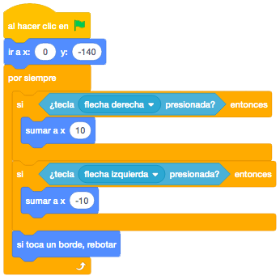

Necesitaremos una cesta y una manzana. Todo lo seleccionaremos de la biblioteca de Scratch.
Seleccionaremos el escenario "Blue Sky" de la biblioteca de Scratch.
El juego consiste en que las manzanas caerán de los árboles y tendremos que recogerlas con la cesta.
Tenemos que poder mover la cesta horizontalmente usando las flechas de dirección con sensores.
La cesta no puede salirse del borde de la pantalla.
Como mínimo tiene que haber 2 manzanas cayendo a la vez.
Cuando la manzana toca la cesta vuelve a caer otra vez desde arriba, sumando un punto y haciendo un sonido.
Sin embargo, si no la cogemos con la cesta, sólo volverá a caer desde arriba.
Pondremos la cesta en la parte inferior y centrada de la pantalla.
Moveremos la cesta con las flecha derecha e izquierda.
En esta ocasión y a partir de ahora, no utilizaremos "Mover Pasos" sino que utilizaremos el bloque
"Sumar a X".
Además, pondremos también el bloque de "Si Toca un Borde, Rebotar".

La manzana se posicionará en la parte superior y la coordenada x será aleatoria dentro de la pantalla.
Utilizaremos el bloque "Ir a X: Y:" y dentro de la coordenada x meteremos el bloque "Número Aleatorio Entre".
Una vez aparezca la manzana, bajará hacia la parte inferior de la pantalla y para ello utilizaremos el bloque
"Sumar a Y".
Cuando llegue a una determinada posición de la parte inferior, haremos que se posicione de nuevo en la parte
superior.

Cuando la manzana toque a la cesta tendrá que sumar puntos. Para ello creamos una variable con el nombre
"Puntos".
Al principio inicializaremos la variable con el valor 0 y lo haremos con el bloque "Dar a el Valor"
Al tocar la cesta, añadiremos un punto a nuestra variable, reproduciremos un sonido y volveremos a situar la
manzana en la parte superior.

Pondríamos una segunda manzana que haga lo mismo para que sea más difícil.
Otros retos que se pueden añadir si el alumno se queda con ganas de mejorar el juego son:
- Añadir más manzanas para darle mayor dificultad.
- Ponerle vidas al juego, creando una nueva variable.
Y el juego quedaría así.
Para ver el juego terminado pulsa
aquí.
Para descargarte el juego terminado pulsa
aquí.